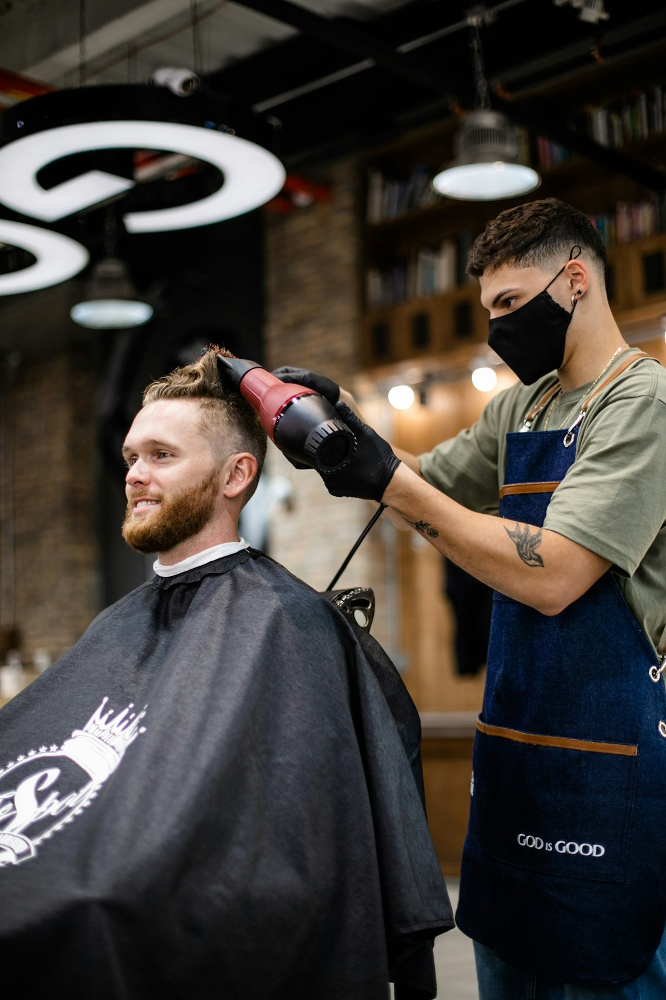

Lavala due volte a settimana con uno shampoo delicato, non tutti i giorni. Dopo la doccia bastano due gocce di olio, massaggiate contro pelo fino alla pelle. Pettina sempre nel verso della crescita e passa da noi ogni tre settimane per tenere la forma.